AI容疑者を、あなたの言葉で取り調べる。
AI 용의자를, 당신의 말로 심문한다.
嘘はすべて、供述に痕跡を残す。
모든 거짓말은, 진술에 흔적을 남긴다.
聞きたいことを、そのまま入力する。容疑者はその場で答え、はぐらかし、ときに嘘をつく。
묻고 싶은 걸 그대로 입력한다. 용의자는 그 자리에서 대답하고, 얼버무리고, 때로는 거짓말을 한다.
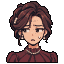
質問の回数には限りがある。何を、誰に、どう聞くか。
질문 횟수에는 한계가 있다. 무엇을, 누구에게, 어떻게 물을까.
アリバイ、人間関係、あの夜の出来事。何でも聞ける。
알리바이, 관계, 그날 밤의 일. 무엇이든 물어볼 수 있다.
集めた証拠を見せれば、供述が揺らぐ。
모은 증거를 보여 주면 진술이 흔들린다.
話が噛み合わない瞬間を捉え、真実を引き出す。
앞뒤가 안 맞는 순간을 잡아 진실을 끌어낸다.
誰が、いつ、どこにいたか。真相を組み立て、犯人を指名する。
누가, 언제, 어디 있었나. 진상을 맞추고 범인을 지목한다.
「夕食のあとは、ずっと部屋にいました」
"저녁 먹고는 계속 방에 있었어요."
「お茶は、沙羅さんに持っていってもらいました」
"차는 세라 씨가 가져갔어요."
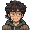
御影圭민지후長期滞在客、作家・27장기 투숙객, 작가 · 27「9時ごろには寝ましたよ」
"9시쯤엔 잤어요."
現場に必ず残される、一羽の折り鶴。五つの事件が、やがて一つの物語につながる。
현장마다 남겨진 종이학 한 마리. 다섯 개의 사건이 하나의 이야기로 이어진다.
#001は無料。#002〜#005は「シーズン1」の一回購入ですべて解放（広告なし）。
#001은 무료. #002~#005는 '시즌 1' 한 번 구매로 모두 열려요 (광고 없음).
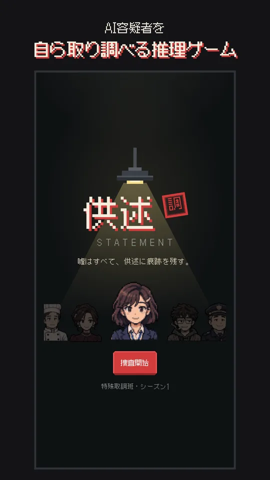
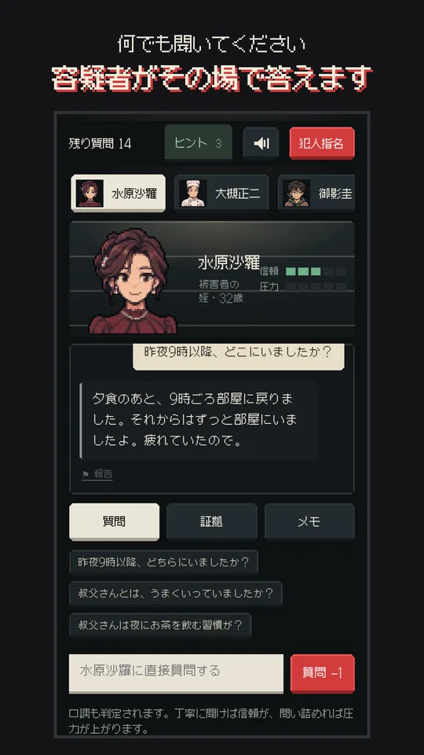
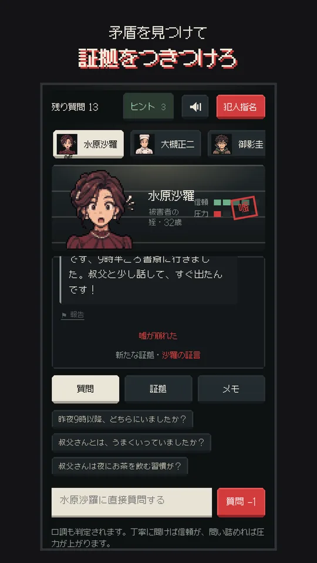
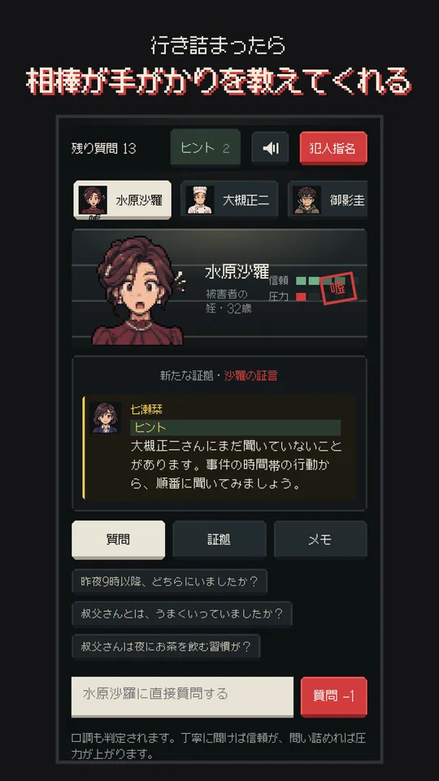
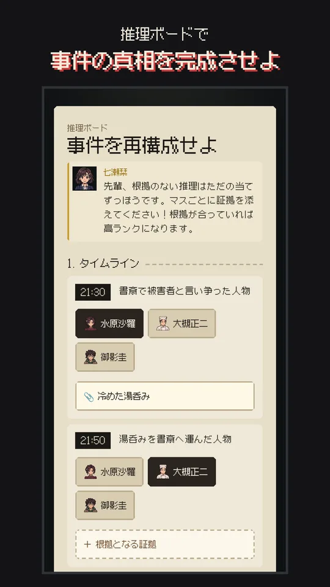
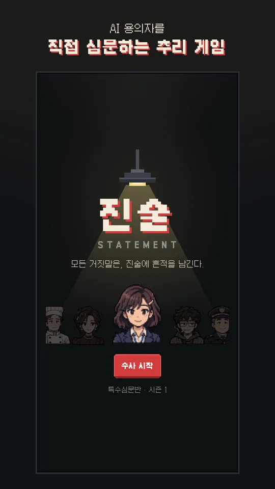
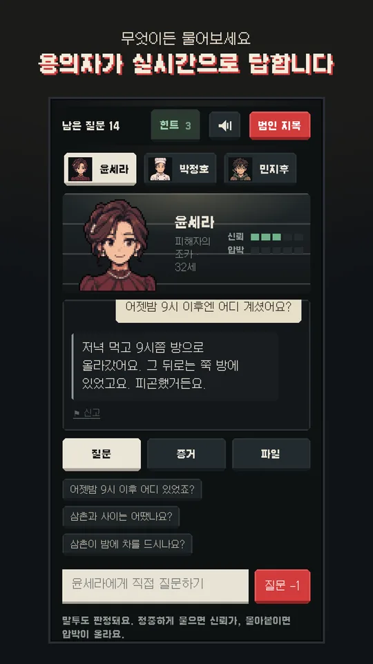
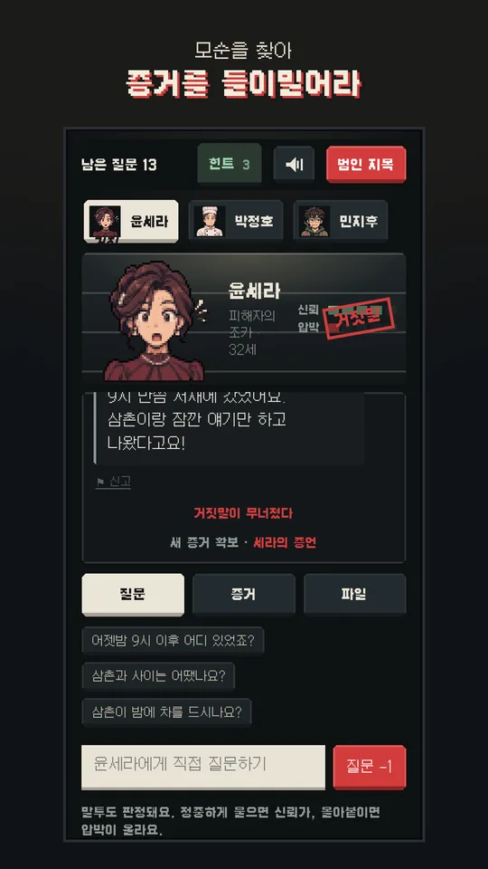
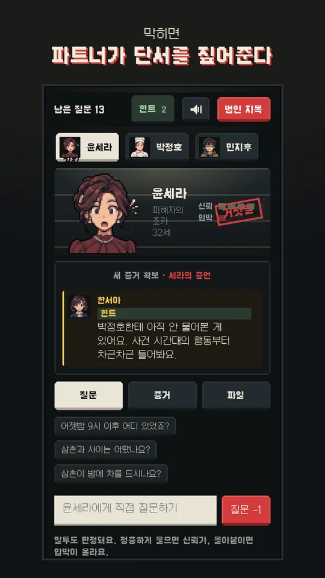
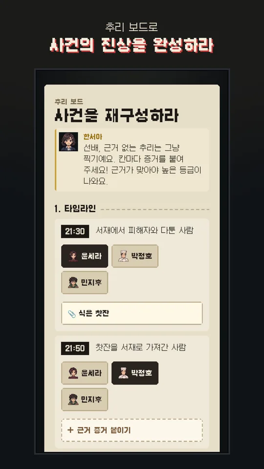
まずはブラウザで事件#001を。続きはAndroidアプリで配信予定です。
먼저 브라우저에서 사건 #001을. 이어지는 사건은 안드로이드 앱으로 출시 예정이에요.
『供述』の実況配信・動画投稿を歓迎します。個人・法人を問わず、事前の連絡は不要です。
配信してくださった方は、@kyojutsu_game をメンションしていただければ、喜んで拝見・紹介します。
〈진술〉의 실황 방송과 영상 업로드를 환영해요. 개인·기업 상관없이 미리 연락하지 않아도 돼요.
방송하셨다면 @kyojutsu_game을 멘션해 주세요. 기쁘게 보고 소개할게요.